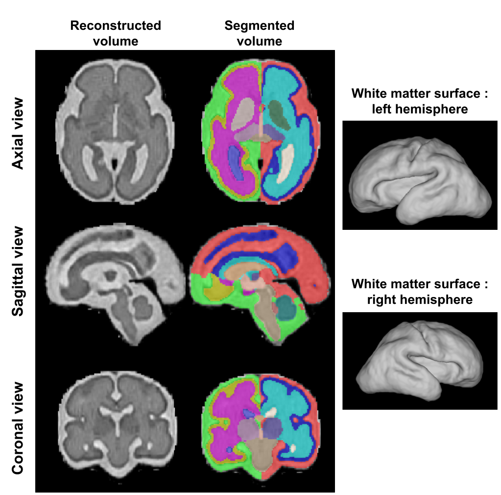

Tutorial: Running Fetpype on a Test Dataset
This page walks you through running Fetpype end-to-end on a small simulated dataset included in the repository, so you can verify your installation and understand what the pipeline does before working with your own data.
Test dataset
The dataset consists of a single simulated fetal brain MRI subject generated with FaBiAN (Fetal Brain MRI Acquisition Numerical Phantom)1. It contains three low-resolution stacks acquired along orthogonal orientations (axial, sagittal, and coronal), mimicking a typical clinical acquisition, together with pre-computed brain masks.
Note
Why pre-computed masks? Clinical acquisitions require masking, as the brain is imaged along with maternal tissue. Simulated images however are already brain-masked by construction, which means that automatic brain extraction tools would fail on them. This is why the masks are provided directly rather than computed by Fetpype's preprocessing step. The same --masks flag applies when you already have masks for your real data and want to skip the brain extraction step.
The dataset is located in the test_data/ folder at the root of the repository and follows the BIDS structure expected by Fetpype:
test_data/
├── dataset_description.json
├── sub-simu001/
│ └── ses-01/
│ └── anat/
│ ├── sub-simu001_ses-01_run-1_T2w.nii.gz # axial stack
│ ├── sub-simu001_ses-01_run-2_T2w.nii.gz # sagittal stack
│ └── sub-simu001_ses-01_run-3_T2w.nii.gz # coronal stack
└── derivatives/
└── masks/
├── dataset_description.json
└── sub-simu001/
└── ses-01/
└── anat/
├── sub-simu001_ses-01_run-1_mask.nii.gz
├── sub-simu001_ses-01_run-2_mask.nii.gz
└── sub-simu001_ses-01_run-3_mask.nii.gz
Running the pipeline
From the root of the repository, with Fetpype installed and Docker running, launch the full pipeline with:
fetpype_run \
--data test_data \
--masks test_data/derivatives/masks \
--out test_data
--datapoints to the BIDS-formatted input directory.--masksprovides pre-computed brain masks, bypassing the brain extraction step.--outis the directory where all pipeline outputs will be saved. Here we set it totest_dataitself so that the results are written alongside the input data undertest_data/derivatives/.
By default the pipeline runs preprocessing, NeSVoR reconstruction, BOUNTI segmentation and Surfpype surface extraction as defined in configs/default_docker.yaml. See Configs for details on how to change the pipeline steps or parameters.
Expected output
Once the pipeline finishes, you will find:
- Results under
test_data/derivatives/nesvor_bounti_surfpype/:
test_data/
└── derivatives/
└── nesvor_bounti_surfpype/
├── dataset_description.json
└── sub-simu001/
└── ses-01/
└── anat/
├── sub-simu001_ses-01_rec-nesvor_T2w.nii.gz # super-resolution reconstruction
├── sub-simu001_ses-01_rec-nesvor_seg-bounti_dseg.nii.gz # tissue segmentation
├── sub-simu001_ses-01_rec-nesvor_seg-bounti_hemi-L_white.surf.gii # left hemisphere white-matter surface
└── sub-simu001_ses-01_rec-nesvor_seg-bounti_hemi-R_white.surf.gii # right hemisphere white-matter surface
- Nipype intermediate files under
test_data/nipype/nesvor_bounti_surfpype/(used for crash recovery and re-runs; can be deleted once results are verified).
A full description of the output structure and naming conventions is available in Output data.

-
Helene Lajous, Christopher W Roy, Tom Hilbert, Priscille de Dumast, Sebastien Tourbier, Yasser Aleman-Gomez, Jerome Yerly, Thomas Yu, Hamza Kebiri, Kelly Payette, and others. A fetal brain magnetic resonance acquisition numerical phantom (fabian). Scientific Reports, 12(1):8682, 2022. ↩